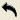

We need to arrange the transforms into the shape shown below. Note that the red triangle is covering the gray reference triangle.
There are several ways to do arrange the transforms, and I am going to tell you all of them. You can stop reading and skip to the next section after you've found a way that works for you.
The first way is to do it manually. To rotate a triangle manually, hold the mouse over one of the solid edges of the triangle (NOT the dotted edge) as shown below. When you do, the solid edge will highlight, and the mouse cursor will have a rotation icon added to it.
Left-click and hold the edge, and drag with your mouse. A circle will appear around the triangle, and the triangle will rotate around the triangle's O vertex inside the circle, as shown below.
When you rotate the triangle, doing this by hand will not result in a precise 90 degree angle from where you originally started. In fact, you might get an offset, as shown with the blue triangle below.
Of course, you could probably get much closer than this, but I can guarantee you that you will never get it perfectly doing it by mouse. Fortunately, you don't have to. In order to fix this, all you have to do is the following: left-click and hold on the triangle. Go down the menu and click the reset rotation option.
Reset rotation resets the triangle to the nearest 90 degree angle it can find. As a result, when you select it and a triangle is at a nearly perfect 90 angle with either the x or the y axis, it snaps to that axis, as shown below.
If you want to know other methods of rotating the triangle 90 degrees, keep reading. If not, skip to the next section.
Method number two for rotating a triangle 90 degrees is to use the rotate 90 degrees buttons on the menu across the top of the transform editor.
The third way of doing it is to go to the Triangle tab and use the rotation dialog located halfway down the triangle tab options shown below.

The 90 degree rotation buttons on the outside rotate the triangle 90 degrees clockwise or 90 degrees counterclockwise
, depending on which one you push. However, this method can get tricky. Oftentimes you will see this method make a slight precision error. For example, if you look at the coordinates of the blue triangle used in the first example, sometimes the triangle coordinate dialogs show the following:
instead of the correct values, which are:
This is caused by some rather esoteric computer voodoo. The number displayed is actually machine epsilon, a very small number close to zero- in fact, it is the smallest number that your computer can store that is not zero. This number will be different on different computers. I don't know why Apophysis chooses to display Machine Epsilon instead of zero, and it is a very annoying bug. Why? Because of that one small error, Apophysis starts making a series of errors that slowly get larger. I encourage you to do the following experiment if you get the very small numbers instead of zero. Hit the rotate 90 Degrees button again. You will see the following:
You will note that the number doubled. This is because, when you are rotating the triangle by 90 degrees, you are performing a multiplication operation. If there is a tiny error in the original calculation, that error gets multiplied, too. If you keep rotating the triangle by pressing the rotate button several times, the error will keep doubling, getting larger and larger and larger until your rotation starts looking really inaccurate.
As a result, If the number shows up, I encourage you to manually replace them with zero in the triangle coordinate dialog boxes. You can type zero into the dialog box to replace machine epsilon. (Which is the fourth way to accomplish this rotation- type the values directly in to the dialog box)
Anyway- back to the rotation dialog . The curved buttons will rotate the triangle clockwise , or counterclockwise , by the value that is shown in the inner dialog box . You can change this value by double-clicking and typing a value in, or by clicking on the arrow on the right-hand side of the box and choosing from the list of common values.
There are three more methods of getting the transform to where you want it, but they all involve manually typing in values, and the last two are simply so that I can brag that I thought of seven ways to manipulate Apophysis triangles.
The fourth way is not really the best way to do this, but there are some occasions when it comes in handy, like when Apophysis decides to throw precision errors at you. Go to the triangle tab and look at the transform coordinates dialogs shown below.
The transform dialog put the O, X, and Y coordinates at the locations you type in. It's pretty straightforward. For example, I typed in (O, 1) for the X coordinate, (-1, 0) for the y coordinate, and (0, 0) for the O coordinate, and, wonder of wonders, that's where they ended up.
The fifth way is slightly different, and, again, isn't really useful in this situation, but is very useful in other situations. Go to the transform tab
 to show the options of the transform menu. Look at the first set of coordinate dialogs, shown below.
to show the options of the transform menu. Look at the first set of coordinate dialogs, shown below.
These unfortunately look almost exactly like the coordinates in the triangle menu, but they are in fact very different. There are a few things you should know about how the coordinates of the transform are set up in this particular dialog. Note that the three coordinates correspond to the three points on your triangle, as seen below.
First, I should explain the O coordinate. The O coordinate, also known as the origin coordinate, sets the position of the triangle. If you left-click on the O coordinate (so that the O coordinate is highlighted white) and drag it , you can change the position of the whole triangle, just like if you were to highlight the whole triangle and drag it.
Typing the value manually into the O coordinate dialog box does the same thing- it moves the entire triangle as opposed to just the O coordinate. Right now, the blue triangle is set to coordinate (0, 0), which is the origin of the gray reference triangle. If you changed the values to, say, (5, 5), the entire triangle will move- not just the O coordinate. This is because the O coordinate is the origin of the triangle, and X and Y are defined in relation to O, as we will see next.
The X and Y coordinates control the shape of the triangle. Left-click on the X coordinate (so that the circle is highlighted red) and drag it around. You will notice that only the X coordinate moves, while the Y and O coordinates stay the same.
If you select the Y coordinate (so that it is highlighted blue) and move it , only the Y coordinate is affected. Neither the O or x coordinates move.
Typing the values into the X or Y coordinate dialog does the same thing, with one gotcha: the values that you type into the x coordinate box or the Y coordinate box are measured from the O coordinate. What do I mean? It's easier to show than to tell, so look below.
In both pictures, note that as the red triangle changes location in relation to the gray triangle, the O coordinate changes, but the X and Y coordinates stay the same. This means that the X coordinate (-1, 0) was measured from the O coordinate, and the Y coordinate (1, 0) was also measured from the O coordinate.
The sixth way is to script the value of the transform, but that is beyond the scope of this tutorial. See the Scripts and Animations chapter for more information on scripting.
The seventh and final way is to edit the parameter file manually in a text editor, such as Notepad on Windows or vim. That is also beyond the scope of this tutorial, and you can read the chapter on Parameters for more information on that.